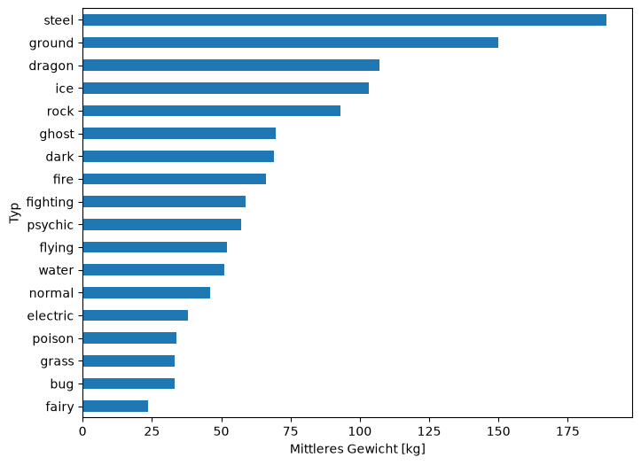

20. Pandas – Teil 2: Daten bereinigen und zusammenfassen#
Im ersten Teil haben wir ein DataFrame eingelesen, untersucht, gefiltert und sortiert.
Jetzt geht es um drei typische nächste Schritte:
fehlende Werte erkennen und behandeln,
Daten gezielt verändern,
Gruppen mit
groupby()zusammenfassen.
import os
import pandas as pd
data_path = os.path.join("..", "data", "pokemon.csv")
pokemon = pd.read_csv(data_path, encoding="utf-8")
columns = [
"name",
"type1",
"type2",
"speed",
"attack",
"defense",
"hp",
"weight_kg",
"generation",
"is_legendary",
]
pokemon_small = pokemon[columns]
pokemon_small.head()
| name | type1 | type2 | speed | attack | defense | hp | weight_kg | generation | is_legendary | |
|---|---|---|---|---|---|---|---|---|---|---|
| 0 | Bulbasaur | grass | poison | 45 | 49 | 49 | 45 | 6.9 | 1 | 0 |
| 1 | Ivysaur | grass | poison | 60 | 62 | 63 | 60 | 13.0 | 1 | 0 |
| 2 | Venusaur | grass | poison | 80 | 100 | 123 | 80 | 100.0 | 1 | 0 |
| 3 | Charmander | fire | NaN | 65 | 52 | 43 | 39 | 8.5 | 1 | 0 |
| 4 | Charmeleon | fire | NaN | 80 | 64 | 58 | 58 | 19.0 | 1 | 0 |
20.1. Fehlende Werte#
Reale Datensätze sind oft unvollständig. pandas kann fehlende Werte – abhängig vom Datentyp – unterschiedlich darstellen, zum Beispiel als NaN, NA oder NaT.
Für unsere Analyse müssen wir diese internen Details normalerweise nicht unterscheiden. Mit .isna() können wir allgemein prüfen, ob Werte fehlen.
pokemon_small.isna().head()
| name | type1 | type2 | speed | attack | defense | hp | weight_kg | generation | is_legendary | |
|---|---|---|---|---|---|---|---|---|---|---|
| 0 | False | False | False | False | False | False | False | False | False | False |
| 1 | False | False | False | False | False | False | False | False | False | False |
| 2 | False | False | False | False | False | False | False | False | False | False |
| 3 | False | False | True | False | False | False | False | False | False | False |
| 4 | False | False | True | False | False | False | False | False | False | False |
Mit .sum() können wir die True-Werte pro Spalte zählen und sehen sofort, wo Werte fehlen.
missing_per_column = pokemon_small.isna().sum()
missing_per_column.sort_values(ascending=False)
type2 384
weight_kg 20
type1 0
name 0
attack 0
speed 0
defense 0
hp 0
generation 0
is_legendary 0
dtype: int64
info() zeigt ebenfalls, wie viele nicht-fehlende Werte jede Spalte enthält.
pokemon_small.info()
<class 'pandas.DataFrame'>
RangeIndex: 801 entries, 0 to 800
Data columns (total 10 columns):
# Column Non-Null Count Dtype
--- ------ -------------- -----
0 name 801 non-null str
1 type1 801 non-null str
2 type2 417 non-null str
3 speed 801 non-null int64
4 attack 801 non-null int64
5 defense 801 non-null int64
6 hp 801 non-null int64
7 weight_kg 781 non-null float64
8 generation 801 non-null int64
9 is_legendary 801 non-null int64
dtypes: float64(1), int64(6), str(3)
memory usage: 62.7 KB
20.1.1. Fehlende Werte beim Zählen sichtbar machen#
value_counts() lässt fehlende Werte standardmäßig weg. Mit dropna=False können wir sie ausdrücklich mitzählen.
pokemon_small["type2"].value_counts(dropna=False).head(10)
type2
NaN 384
flying 95
poison 34
ground 34
fairy 29
psychic 29
fighting 25
steel 22
dark 21
grass 20
Name: count, dtype: int64
20.2. Fehlende Werte behandeln#
Welche Strategie sinnvoll ist, hängt von der Bedeutung der Daten ab. Es gibt keine allgemeine Regel, nach der fehlende Werte immer gelöscht oder immer ersetzt werden sollten.
Für type2 können wir zum Beispiel ausdrücklich den Text "unknown" verwenden:
pokemon_filled = pokemon_small.copy()
pokemon_filled["type2"] = (
pokemon_filled["type2"].fillna("unknown")
)
pokemon_filled[["name", "type1", "type2"]].head(10)
| name | type1 | type2 | |
|---|---|---|---|
| 0 | Bulbasaur | grass | poison |
| 1 | Ivysaur | grass | poison |
| 2 | Venusaur | grass | poison |
| 3 | Charmander | fire | unknown |
| 4 | Charmeleon | fire | unknown |
| 5 | Charizard | fire | flying |
| 6 | Squirtle | water | unknown |
| 7 | Wartortle | water | unknown |
| 8 | Blastoise | water | unknown |
| 9 | Caterpie | bug | unknown |
Alternativ können Zeilen mit fehlenden Werten entfernt werden. Dabei sollte möglichst klar angegeben werden, welche Spalten für diese Entscheidung wichtig sind.
Hier entfernen wir nur Zeilen, bei denen type2 fehlt:
pokemon_with_two_types = pokemon_small.dropna(
subset=["type2"]
)
print(pokemon_small.shape)
print(pokemon_with_two_types.shape)
(801, 10)
(417, 10)
Ein ungezieltes dropna() ohne subset entfernt dagegen jede Zeile, in der irgendeine betrachtete Spalte fehlt. Das kann deutlich mehr Daten entfernen als beabsichtigt.
20.3. Filtern und Kennzahlen berechnen#
Aus Teil 1 kennen wir boolesche Masken.
Wir verwenden .loc, um passende Zeilen und die gewünschte Spalte gemeinsam auszuwählen.
bug_mask = pokemon_small["type1"] == "bug"
pokemon_small.loc[
bug_mask,
["name", "weight_kg"],
].head()
| name | weight_kg | |
|---|---|---|
| 9 | Caterpie | 2.9 |
| 10 | Metapod | 9.9 |
| 11 | Butterfree | 32.0 |
| 12 | Weedle | 3.2 |
| 13 | Kakuna | 10.0 |
mean_bug_weight = pokemon_small.loc[
bug_mask,
"weight_kg",
].mean()
print(mean_bug_weight)
33.083333333333336
Das ist gut geeignet, wenn wir eine bestimmte Gruppe untersuchen möchten.
Wenn wir dieselbe Berechnung für viele Gruppen durchführen wollen, wird groupby() praktischer.
20.4. Werte gezielt verändern#
Für eine bewusste Arbeitskopie können wir .copy() verwenden.
Änderungen an ausgewählten Zeilen und Spalten schreiben wir mit .loc[...] = .... Dadurch ist klar, wo die Änderung stattfinden soll.
pokemon_work = pokemon_small.copy()
pokemon_work["weight_class"] = "normal"
heavy_mask = pokemon_work["weight_kg"] >= 100
pokemon_work.loc[
heavy_mask,
"weight_class",
] = "heavy"
pokemon_work[
["name", "weight_kg", "weight_class"]
].head(10)
| name | weight_kg | weight_class | |
|---|---|---|---|
| 0 | Bulbasaur | 6.9 | normal |
| 1 | Ivysaur | 13.0 | normal |
| 2 | Venusaur | 100.0 | heavy |
| 3 | Charmander | 8.5 | normal |
| 4 | Charmeleon | 19.0 | normal |
| 5 | Charizard | 90.5 | normal |
| 6 | Squirtle | 9.0 | normal |
| 7 | Wartortle | 22.5 | normal |
| 8 | Blastoise | 85.5 | normal |
| 9 | Caterpie | 2.9 | normal |
Vermeidet für Änderungen Konstruktionen wie:
df[mask]["column"] = value
Die Auswahl und die Zuweisung sollten stattdessen gemeinsam über .loc erfolgen:
df.loc[mask, "column"] = value
20. groupby(): Gruppen zusammenfassen#
groupby() folgt gedanklich einem einfachen Muster:
split – Daten in Gruppen aufteilen,
apply – pro Gruppe eine Berechnung durchführen,
combine – die Ergebnisse wieder zusammenführen.
Wir gruppieren zuerst nach type1.
grouped_by_type = pokemon_small.groupby("type1")
grouped_by_type
<pandas.api.typing.DataFrameGroupBy object at 0x749a98d4cad0>
20.1. Wie groß sind die Gruppen?#
Wenn wir wissen möchten, wie viele Zeilen zu jeder Gruppe gehören, verwenden wir .size().
type_counts = (
pokemon_small
.groupby("type1")
.size()
.sort_values(ascending=False)
)
type_counts
type1
water 114
normal 105
grass 78
bug 72
psychic 53
fire 52
rock 45
electric 39
poison 32
ground 32
dark 29
fighting 28
dragon 27
ghost 27
steel 24
ice 23
fairy 18
flying 3
dtype: int64
.size() zählt die Zeilen einer Gruppe.
.count() beantwortet eine andere Frage: Es zählt für jede Spalte die nicht-fehlenden Werte. Deshalb kann .count() bei fehlenden Daten je nach Spalte unterschiedliche Ergebnisse liefern.
20.2. Mittelwerte pro Gruppe#
Für Mittelwerte wählen wir hier bewusst zuerst die numerischen Spalten aus, die uns interessieren.
numeric_columns = [
"speed",
"attack",
"defense",
"hp",
"weight_kg",
]
mean_by_type = (
pokemon_small
.groupby("type1")[numeric_columns]
.mean()
)
mean_by_type.head()
| speed | attack | defense | hp | weight_kg | |
|---|---|---|---|---|---|
| type1 | |||||
| bug | 63.569444 | 70.125000 | 70.847222 | 56.722222 | 33.083333 |
| dark | 75.310345 | 87.793103 | 70.517241 | 72.551724 | 69.096552 |
| dragon | 76.111111 | 106.407407 | 86.259259 | 79.851852 | 107.125926 |
| electric | 85.410256 | 70.820513 | 61.820513 | 60.512821 | 37.944737 |
| fairy | 53.666667 | 62.111111 | 68.166667 | 73.944444 | 23.555556 |
Das Ergebnis ist wieder ein DataFrame. Der Gruppenschlüssel type1 ist nun der Index.
mean_by_type.sort_values(
"speed",
ascending=False,
).head(10)
| speed | attack | defense | hp | weight_kg | |
|---|---|---|---|---|---|
| type1 | |||||
| flying | 99.666667 | 66.666667 | 65.000000 | 68.000000 | 52.000000 |
| electric | 85.410256 | 70.820513 | 61.820513 | 60.512821 | 37.944737 |
| dragon | 76.111111 | 106.407407 | 86.259259 | 79.851852 | 107.125926 |
| dark | 75.310345 | 87.793103 | 70.517241 | 72.551724 | 69.096552 |
| psychic | 75.150943 | 65.566038 | 69.264151 | 72.943396 | 57.328846 |
| fire | 73.346154 | 81.500000 | 67.788462 | 68.730769 | 66.096000 |
| normal | 69.533333 | 75.161905 | 59.695238 | 76.723810 | 46.158416 |
| fighting | 64.285714 | 99.178571 | 66.392857 | 71.428571 | 58.675000 |
| poison | 64.187500 | 72.656250 | 70.031250 | 65.593750 | 33.830000 |
| water | 63.921053 | 73.307018 | 73.482456 | 70.219298 | 51.071930 |
20.3. Nach mehreren Merkmalen gruppieren#
Gruppierungen können auch mehrere Schlüssel besitzen.
Hier fragen wir beispielsweise, wie viele Pokémon es für jede Kombination aus type1 und is_legendary gibt:
pokemon_small.groupby(
["type1", "is_legendary"]
).size()
type1 is_legendary
bug 0 69
1 3
dark 0 26
1 3
dragon 0 20
1 7
electric 0 34
1 5
fairy 0 17
1 1
fighting 0 28
fire 0 47
1 5
flying 0 2
1 1
ghost 0 26
1 1
grass 0 74
1 4
ground 0 30
1 2
ice 0 21
1 2
normal 0 102
1 3
poison 0 32
psychic 0 36
1 17
rock 0 41
1 4
steel 0 18
1 6
water 0 108
1 6
dtype: int64
20.4. Mehrere Kennzahlen mit .agg()#
Häufig möchten wir pro Gruppe verschiedene Kennzahlen gleichzeitig berechnen.
Mit .agg() können wir dafür benannte Ergebnisse definieren:
summary_by_type = (
pokemon_small
.groupby("type1")
.agg(
number=("name", "size"),
mean_speed=("speed", "mean"),
mean_attack=("attack", "mean"),
mean_weight=("weight_kg", "mean"),
)
.sort_values(
"mean_speed",
ascending=False,
)
)
summary_by_type.head(10)
| number | mean_speed | mean_attack | mean_weight | |
|---|---|---|---|---|
| type1 | ||||
| flying | 3 | 99.666667 | 66.666667 | 52.000000 |
| electric | 39 | 85.410256 | 70.820513 | 37.944737 |
| dragon | 27 | 76.111111 | 106.407407 | 107.125926 |
| dark | 29 | 75.310345 | 87.793103 | 69.096552 |
| psychic | 53 | 75.150943 | 65.566038 | 57.328846 |
| fire | 52 | 73.346154 | 81.500000 | 66.096000 |
| normal | 105 | 69.533333 | 75.161905 | 46.158416 |
| fighting | 28 | 64.285714 | 99.178571 | 58.675000 |
| poison | 32 | 64.187500 | 72.656250 | 33.830000 |
| water | 114 | 63.921053 | 73.307018 | 51.071930 |
Diese Form ist besonders praktisch, weil direkt sichtbar ist:
welche Eingabespalte verwendet wird,
welche Berechnung durchgeführt wird,
wie die Ergebnis-Spalte heißen soll.
20.5. Kurzer Ausblick: Plotten direkt aus pandas#
pandas kann einfache Diagramme direkt aus einer Series oder einem DataFrame erzeugen. Im Hintergrund wird dafür typischerweise matplotlib verwendet.
Wir plotten hier eine einzige sinnvoll vergleichbare Größe: das mittlere Gewicht je Typ.
mean_weight = (
summary_by_type["mean_weight"]
.sort_values()
)
ax = mean_weight.plot.barh(
figsize=(8, 6)
)
ax.set_xlabel("Mittleres Gewicht [kg]")
ax.set_ylabel("Typ")
Text(0, 0.5, 'Typ')

Für komplexere Visualisierungen gibt es spezialisierte Bibliotheken. Hier reicht uns die Idee, dass das Ergebnis einer pandas-Auswertung direkt visualisiert werden kann.
20.6. Zusammenfassung#
Wichtige Muster aus diesem Kapitel:
df.isna().sum()
df["column"].fillna(...)
df.dropna(subset=[...])
df.loc[mask, columns]
df.loc[mask, "column"] = value
df.groupby("group").size()
df.groupby("group")[columns].mean()
df.groupby("group").agg(
new_name=("column", "mean"),
)
pandas kann noch sehr viel mehr – zum Beispiel Tabellen zusammenführen (merge), Zeitreihen verarbeiten oder Daten umformen. Für den Einstieg sind Auswahl, fehlende Werte und groupby() aber einige der wichtigsten Werkzeuge.